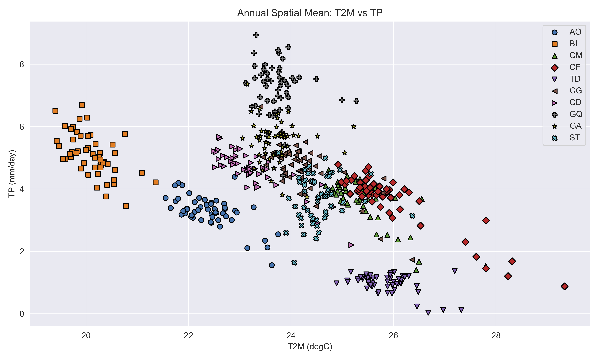
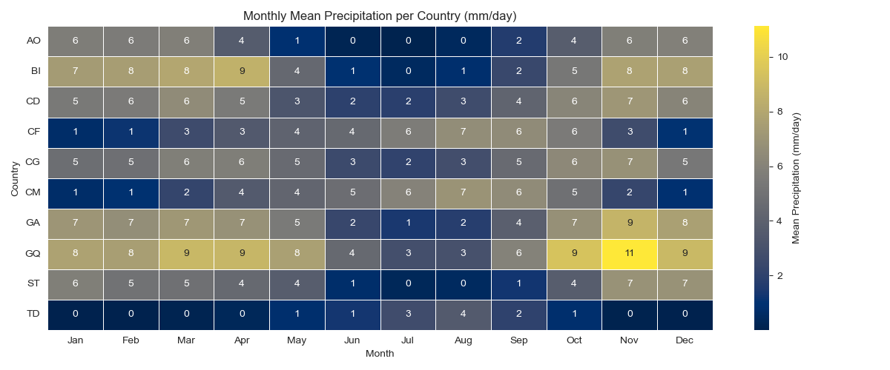
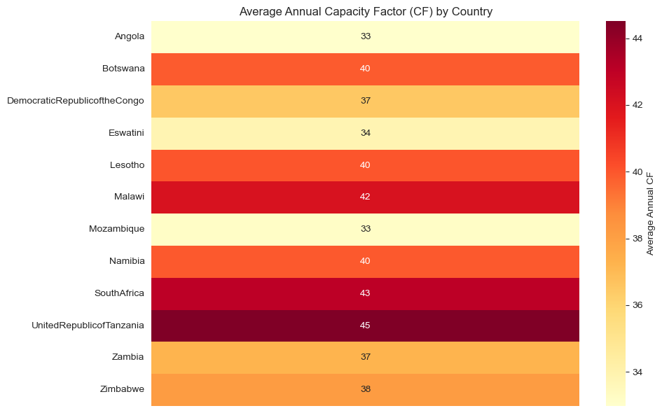
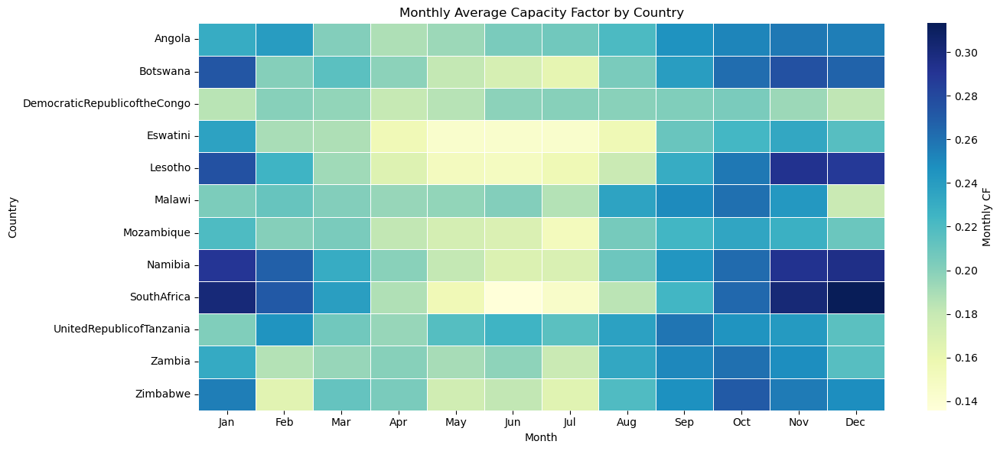

Data Preparation Workflow Documentation#
This document details the data preparation workflow for energy modeling using various Jupyter notebooks. It covers climatic data analysis, renewable energy profiles, generation datasets, load profiles, representative days, and hydropower data integration.
Summary Table#
Step |
Notebook |
Key Inputs |
Key Outputs |
|---|---|---|---|
1 |
|
List of countries/zones |
Perimeter definition |
2 |
|
|
Climate overview plots |
3 |
|
List of countries (SPLAT names) |
Renewable profiles (solar, wind) |
3 |
|
Coordinates from |
Renewable profiles (solar, wind) |
3 |
|
Country names or zones |
Coordinates for Renewable Ninja |
4 |
|
None |
Generation project map, aggregated data |
5 |
|
Existing load data |
Smoothed load profiles |
5 |
|
Hourly load shapes, monthly means |
Synthetic load profiles |
6 |
|
Climate and load profiles |
|
7 |
|
IRENA hydropower atlas, |
Monthly hydro capacity factors |
7 |
|
Basin shapefiles |
Hydro basin maps |
7 |
|
GRDC inflow data |
Inflow analysis |
7 |
|
Utility data, IRENA atlas |
Atlas comparison plots |
1. Define Perimeter Countries/Zones#
Define the perimeter of countries or zones to study.
Fill the file:
zcmap.csvThis file should include the names of countries/zones used throughout the analysis.
2. Run Climatic Overview#
Notebook: `pre-analysis/climatic/climatic_overview.ipynb``
Objective: Understand precipitation and temperature patterns to determine representative seasons.
Input: List of countries/zones from
zcmap.csv.Output: Climate overview plots.
 
3. Get Solar and Wind Information#
Option 1 — IRENA Data#
Notebook: climatic/get_renewables_irena_data.ipynb
Recommended for obtaining solar and wind profiles.
Input: List of countries using SPLAT model names.
Output:
Hourly renewable profiles by zone and season.
Files structured with columns:
zone, season, day, hour, <climatic_year>
Example outputs (images stored in dwld folder):
LCOE Solar |
Wind Heatmap |
|---|---|
 |
 |
Option 2 — Renewable Ninja Data#
Notebook: `climatic/get_renewables_ninja_data.ipynb``
Alternative source for solar and wind profiles.
Requires geographical coordinates from:
Notebook: `generation/get_renewables_coordinates.ipynb``
Outputs follow the same format:
zone, season, day, hour, <climatic_year>
4. Make Generation List#
Notebook: generation/global_database_overview.ipynb
Purpose: Compare aggregated results by technology or fuel.
Goal: Create the EPM input file: `supply/pGenDatExcel.csv``
Generates:
Aggregated data summaries.
Map of generation projects.
Example map output:
5. Generate Load Profile#
Two approaches:
5.1 Smooth Existing Load Data#
Notebook: load/treat_load_profile.ipynb
Input: Actual load data.
Output: Smoothed load profiles.
5.2 Generate Synthetic Load Profile#
Notebook: load/generate_load_profile.ipynb
Input:
Hourly load profile shapes.
Monthly mean values.
Output: Synthetic hourly load profiles.
6. Generate Representative Days#
Notebook: representative_days/epresentative_days.ipynb
Uses:
Season definitions.
Data created in steps 2 and 4.
Output:
pHours.csvload/pDemandProfile.csvsupply/pVREProfile.csv
These files are in EPM format and ready for model integration.
7. Hydro Data Preparation#
7.1 Monthly Capacity Factor#
Notebook: hydro_capacity_factor.ipynb
Input:
IRENA African Hydropower Atlas:
IRENA African_Hydropower_Atlas.xlsx
Matching plant names from:
supply/pGenDatExcel.csv
Output:
Monthly hydro capacity factors.
7.2 Hydro Basin Mapping#
Notebook: hydro_basins_map.ipynb
Output: Map visualizations of hydro basins.
7.3 Advanced Hydro Analyses#
Hydro Inflow Analysis#
Notebook: hydro_inflow_analysis.ipynb
Analyzes GRDC inflow data for climate change studies.
Hydro Atlas Comparison#
Notebook:hydro_atlas_comparison.ipynb
Compares utility data with IRENA hydropower atlas.
Notes#
Always ensure consistency in naming conventions for zones/countries across all files.
All renewable output formats are standardized to facilitate integration into the SPLAT or EPM models.